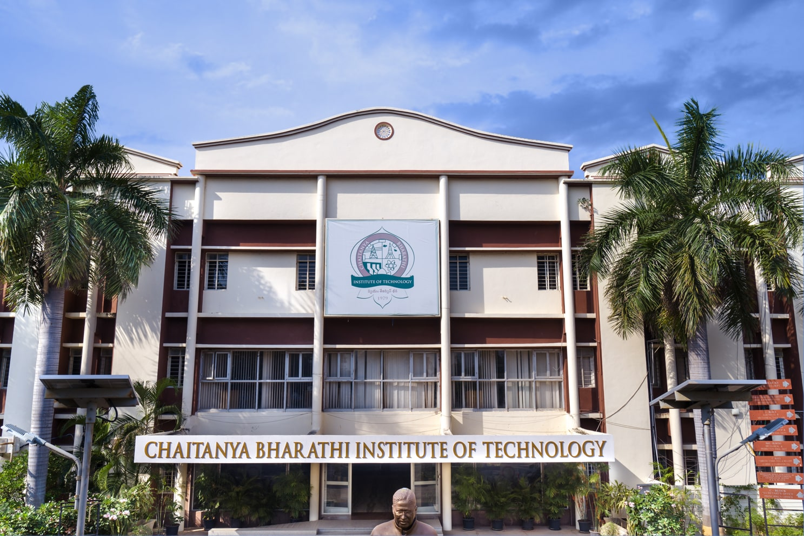

"Sustainable AI" refers to the development and use of artificial intelligence (AI) in a manner that minimizes negative environmental impacts, promotes social and economic equity, and ensures long-term benefits for society. This approach involves considering the ethical, social, and environmental implications of AI technologies, as well as designing AI systems that are robust, reliable, and accountable.
The International Conference on Sustainable AI is conducted by the Department of Artificial Intelligence and Machine Learning (AIML) at Chaitanya Bharathi Institute of Technology (CBIT).
A sustainable society is driven by the principle of realizing peace and prosperity for all people and the planet with an inclusiveness that “leaves no one behind.” This conference takes paper submissions on research and development of ML techniques in the context of sustainable societies. International conference on machine learning for society can encompass a wide range of topics and tracks that address the societal impact and applications of machine learning Topics may include, but are not limited to.
It is planned to publish the proceedings with Springer series (final approval pending)
TBD
Papers are expected to be within the 8-15 page range. The review process takes into account both the quality in writing and the scientific impact of the work. Authors should clearly identify the problem, their contribution(s), justification with respect to the state-of-the-art works
Each accepted final paper must be accompanied by the dully filled in
copyright form called Consent to Publish (CTP), which we ask a corresponding
author to complete and sign. The final submission should be prepared as a
separate zipped file as mentioned below.
All final submissions should be in a .zip compressed archive including:
Sri. N. Subash, President, CBIT (Autonomous)
Prof. C.V. Narasimhulu, Principal, CBIT (Autonomous)
Prof. R. Madana Mohana, Professor
Dr. Prabhakar Kandukuri, Professor
Dr. Garlapati Narayana, Associate Professor
Mr. Medikonda Asha Kiran, Assistant Professor
Mrs. G. Kavita, Assistant Professor
Mrs. Shastrula Pallavi, Assistant Professor
Prof. Umakanta Choudhary, Advisor I & I, CBIT (A)
Prof. Sarma A.D, Advisor, R&D, CBIT (A)
Prof. N. L. N. Reddy, Advisor, CDC,, CBIT (A)
Prof. P. Ravinder Reddy, Director & Head, R&E Hub, CBIT (A)
Prof. Suresh Pabboju, Director AEC & COE, CBIT (A)
Prof. M. Sushanth Babu, Director, Academics, CBIT (A)
Prof. N. T. Rao Director IQAC, CBIT (A)
Prof. P. V. R. Ravindra Reddy, Director Student Affairs, CBIT (A)
Dr. Y. Rama Devi, Professor
Dr. J. Manoranjini, Associate Professor
Mrs. K. Mary Sudha Rani, Assistant Professor
Mrs. D. Naga Jyothi, Assistant Professor
Mrs. Ramya Thavva, Assistant Professor
Mrs. Gadicherla Sirisha, Assistant Professor
Mr. M. Sathyanarayana, Assistant Professor
Mr. R. Anand Raj, Asst. Programmer
Mr. G. Siddhartha, Computer Operator
Mr. N. D. Ramesh, Jr. Assistant
CHAITANYA BHARATHI INSTITUTE OF TECHNOLOGY, established in the Year 1979, esteemed as the Premier Engineering Institute in the States of Telangana and Andhra Pradesh, was promoted by a Group of Visionaries from varied Professions of Engineering, Medical, Legal and Management, with an Objective to facilitate the Best Engineering and Management Education to the Students and contribute towards meeting the need of Skilled and Technically conversant Engineers and Management Professionals, for the Country that embarked on an Economic Growth Plan.
The Institute, committed to Education and Innovation, started with three-Degree Courses in Engineering for 200 Students and over the 45 Years, has emerged as a Dream Destination for; Students seeking to excel in Engineering and Management Education, Teaching Community to progress with a rewarding Career and Corporates to source well-rounded Engineers.
Last date for submission: 10th October 2024
Acceptance Notification: 10th November 2024
Camera Ready Submission & Registration: 20th November 2024
Conference Dates: 3rd and 4th December 2024
The event is supported by Chaitanya Bharathi Institute of Technology, and it is a FREE admission event, but registration is needed. Certificate of attendance will be issued for the presentation of technical papers, (and/or), attendance of the conference. Certificates will be emailed to participants automatically, immediately after the end of the conference.